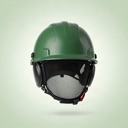
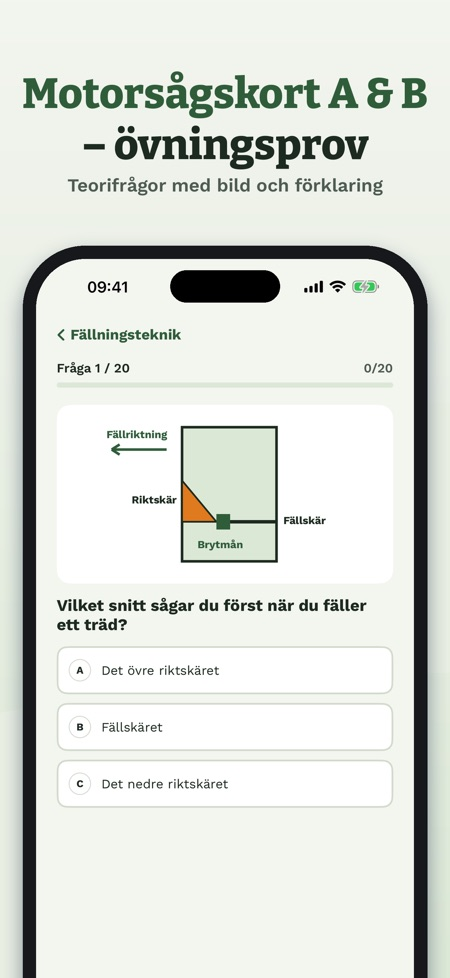
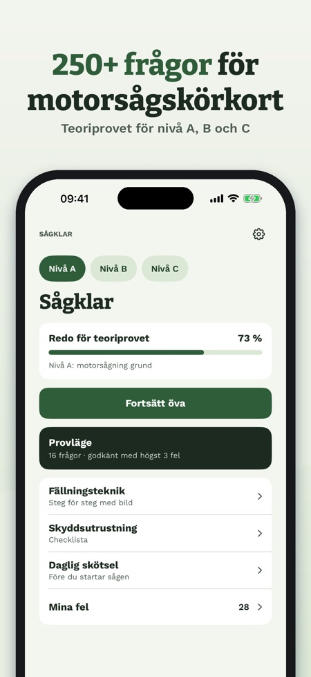
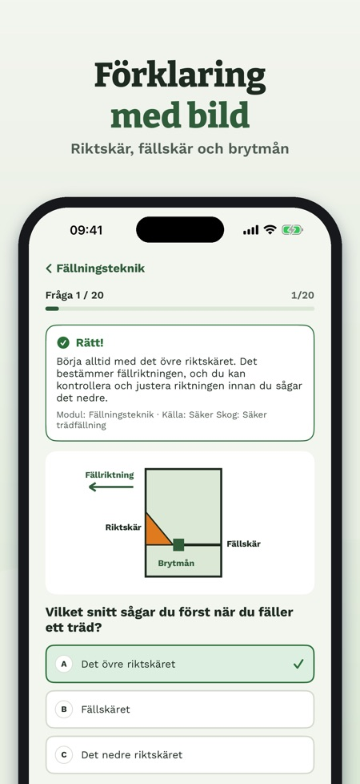

Sågklar hjälper dig att plugga inför teoriprovet för motorsågskörkort, nivå A, B och C. Du får frågor med förklaringar och egna bilder samt övningsprov per nivå.



A gäller underhåll och kapning, B fällning av normala träd och C svårare fällning och stormfällt.
Över 250 egna frågor med tre svarsalternativ.
Nej. Körkortet utfärdas bara av en certifierad instruktör efter teori- och praktiskt prov. Sågklar är en fristående övningsapp som inte ersätter kursen.
Bland annat skyddsutrustning, kedja och svärd, kapning, fällningsteknik, fastfällda och stormfällda träd, första hjälpen och regler (AFS 2023:11).
Ja, utan nätverk och utan konto.
Nej, ett engångsköp låser upp alla frågor och övningsprov.
En modul med 20 frågor per nivå, ett övningsprov för nivå A, checklistan och ordlistan kan användas utan köp.
Sågklar hjälper dig att plugga inför teoriprovet för motorsågskörkort, nivå A, B och C.
En modul med 20 frågor per nivå (A: skyddsutrustning, B: planering och riskbedömning, C: stormfällda träd), ett övningsprov för nivå A, checklistan för skyddsutrustning och ordlistan kan användas utan köp. Ett engångsköp låser upp alla frågor och övningsprov. Ingen prenumeration.
Motorsågskörkortet utfärdas bara av en certifierad instruktör efter teori- och praktiskt prov. Sågklar är en fristående övningsapp, inte kopplad till Skogforsk eller Skogsstyrelsen, och ersätter inte kursen. Text och bilder är våra egna.